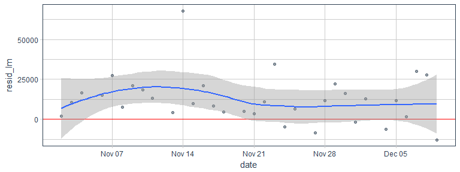

In my last post, I prepared and visually explored time series data.
Now, I will use this data to test the timekit package for time series forecasting with machine learning.
Forecasting
In time series forecasting, we use models to predict future time points based on past observations.
As mentioned in timekit’s vignette, “as with most machine learning applications, the prediction is only as good as the patterns in the data. Forecasting using this approach may not be suitable when patterns are not present or when the future is highly uncertain (i.e. past is not a suitable predictor of future performance).”
And while this is certainly true, we don’t always have data with a strong regular pattern. And, I would argue, data that has very obvious patterns doesn’t need a complicated model to generate forecasts - we can already guess the future curve just by looking at it. So, if we think of use-cases for businesses, who want to predict e.g. product sales, forecasting models are especially relevant in cases where we can’t make predictions manually or based on experience.
The packages I am using are timekit for forecasting, tidyverse for data wrangling and visualization, caret for additional modeling functions, tidyquant for its ggplot theme, broom and modelr for (tidy) modeling.
library(tidyverse)
library(caret)
library(tidyquant)
library(broom)
library(timekit)
library(modelr)
options(na.action = na.warn)
Training and test data
My input data is the tibble retail_p_day, that was created in my last post.
I am splitting this dataset into training (all data points before/on Nov. 1st 2011) and test samples (all data points after Nov. 1st 2011).
retail_p_day <- retail_p_day %>%
mutate(model = ifelse(day <= "2011-11-01", "train", "test"))
colnames(retail_p_day)[grep("^[0-9]+", colnames(retail_p_day))] <- paste0("P_", colnames(retail_p_day)[grep("^[0-9]+", colnames(retail_p_day))])
Here, I am testing out timekit’s functions with the net income per day as response variable. Because the time series in our data set is relatively short and doesn’t cover multiple years, this forecast will only be able to capture recurring variation in days and weeks. Variations like increased sales before holidays, etc. would need additional data from several years to be accurately forecast.
As we can see in the plot below, the net income shows variation between days.
retail_p_day %>%
ggplot(aes(x = day, y = sum_income, color = model)) +
geom_point(alpha = 0.5) +
geom_line(alpha = 0.5) +
scale_color_manual(values = palette_light()) +
theme_tq()

Augmenting the time series signature
With timekit, we can do forecasting with only a time series signature (a series of dates and times) and a corresponding response variable. If we had additional features that could be forecast independently, we could also introduce these into the model, but here, I will only work with the minimal data set.
A central function of timekit is tk_augment_timeseries_signature(), which adds a number of features based on the properties of our time series signature:
- index: The index value that was decomposed
- index.num: The numeric value of the index in seconds. The base is “1970-01-01 00:00:00”.
- diff: The difference in seconds from the previous numeric index value.
- year: The year component of the index.
- half: The half component of the index.
- quarter: The quarter component of the index.
- month: The month component of the index with base 1.
- month.xts: The month component of the index with base 0, which is what xts implements.
- month.lbl: The month label as an ordered factor beginning with January and ending with December.
- day: The day component of the index.
- hour: The hour component of the index.
- minute: The minute component of the index.
- second: The second component of the index.
- hour12: The hour component on a 12 hour scale.
- am.pm: Morning (AM) = 1, Afternoon (PM) = 2.
- wday: The day of the week with base 1. Sunday = 1 and Saturday = 7.
- wday.xts: The day of the week with base 0, which is what xts implements. Sunday = 0 and Saturday = 6.
- wday.lbl: The day of the week label as an ordered factor begining with Sunday and ending with Saturday.
- mday: The day of the month.
- qday: The day of the quarter.
- yday: The day of the year.
- mweek: The week of the month.
- week: The week number of the year (Sunday start).
- week.iso: The ISO week number of the year (Monday start).
- week2: The modulus for bi-weekly frequency.
- week3: The modulus for tri-weekly frequency.
- week4: The modulus for quad-weekly frequency.
- mday7: The integer division of day of the month by seven, which returns the first, second, third, … instance the day has appeared in the month. Values begin at 1. For example, the first Saturday in the month has mday7 = 1. The second has mday7 = 2.
Because we have missing data for the first column of diff, I am removing this row. We need to keep in mind too, that we have an irregular time series, because we never have data on Saturdays. This will affect the modeling and results and we need to account for this later on! Alternatively, it might make sense to compare the results when setting all NAs/Saturdays to 0, assuming that no information means that there was no income on a given day. Or we could impute missing values. Which strategy most accurately represents your data needs to be decided based on a good understanding of the business and how the data was collected.
retail_p_day_aug <- retail_p_day %>%
rename(date = day) %>%
select(model, date, sum_income) %>%
tk_augment_timeseries_signature() %>%
select(-contains("month"))
retail_p_day_aug <- retail_p_day_aug[complete.cases(retail_p_day_aug), ]
Preprocessing
Not all of these augmented features will be informative for our model. For example, we don’t have information about time of day, so features like hour, minute, second, etc. will be irrelevant here.
Let’s look at column variation for all numeric feature and remove those with a variance of 0.
library(matrixStats)
(var <- data.frame(colnames = colnames(retail_p_day_aug[, sapply(retail_p_day_aug, is.numeric)]),
colvars = colVars(as.matrix(retail_p_day_aug[, sapply(retail_p_day_aug, is.numeric)]))) %>%
filter(colvars == 0))
## colnames colvars
## 1 hour 0
## 2 minute 0
## 3 second 0
## 4 hour12 0
## 5 am.pm 0
retail_p_day_aug <- select(retail_p_day_aug, -one_of(as.character(var$colnames)))
Next, we want to remove highly correlated features. By plotting them, we can get an idea about which cutoff to set.
library(ggcorrplot)
cor <- cor(retail_p_day_aug[, sapply(retail_p_day_aug, is.numeric)])
p.cor <- cor_pmat(retail_p_day_aug[, sapply(retail_p_day_aug, is.numeric)])
ggcorrplot(cor, type = "upper", outline.col = "white", hc.order = TRUE, p.mat = p.cor,
colors = c(palette_light()[1], "white", palette_light()[2]))

I am going to choose a cutoff of 0.9 for removing features:
cor_cut <- findCorrelation(cor, cutoff=0.9)
retail_p_day_aug <- select(retail_p_day_aug, -one_of(colnames(cor)[cor_cut]))
Now, I can split the data into training and test sets:
train <- filter(retail_p_day_aug, model == "train") %>%
select(-model)
test <- filter(retail_p_day_aug, model == "test")
Modeling
To model the time series of the response variable sum_income, I am using a generalized linear model. We could try all kinds of different models and modeling parameters, but for this test I am keeping it simple.
fit_lm <- glm(sum_income ~ ., data = train)
We can examine our model e.g. by visualizing:
tidy(fit_lm) %>%
gather(x, y, estimate:p.value) %>%
ggplot(aes(x = term, y = y, color = x, fill = x)) +
facet_wrap(~ x, scales = "free", ncol = 4) +
geom_bar(stat = "identity", alpha = 0.8) +
scale_color_manual(values = palette_light()) +
scale_fill_manual(values = palette_light()) +
theme_tq() +
theme(axis.text.x = element_text(angle = 45, vjust = 1, hjust = 1))

augment(fit_lm) %>%
ggplot(aes(x = date, y = .resid)) +
geom_hline(yintercept = 0, color = "red") +
geom_point(alpha = 0.5, color = palette_light()[[1]]) +
geom_smooth() +
theme_tq()

With this model, we can now add predictions and residuals for the test data…
pred_test <- test %>%
add_predictions(fit_lm, "pred_lm") %>%
add_residuals(fit_lm, "resid_lm")
… and visualize the residuals.
pred_test %>%
ggplot(aes(x = date, y = resid_lm)) +
geom_hline(yintercept = 0, color = "red") +
geom_point(alpha = 0.5, color = palette_light()[[1]]) +
geom_smooth() +
theme_tq()

We can also compare the predicted with the actual sum income in the test set.
pred_test %>%
gather(x, y, sum_income, pred_lm) %>%
ggplot(aes(x = date, y = y, color = x)) +
geom_point(alpha = 0.5) +
geom_line(alpha = 0.5) +
scale_color_manual(values = palette_light()) +
theme_tq()

Forecasting
Once we are satisfied with our model’s performance on the test set, we can use it to forecast future events. To create future time points for modeling, we need to extract the time index (the date column day in our data frame).
# Extract index
idx <- retail_p_day %>%
tk_index()
From this index we can generate the future time series.
Here, we need to beware of a couple of things. Most importantly, we need to account for the irregularity of our data: We never have data for Saturdays and we have a few random missing values in between, as can be seen in the diff column of retail_p_day_aug (1 day difference == 86400 seconds).
retail_p_day_aug %>%
ggplot(aes(x = date, y = diff)) +
geom_point(alpha = 0.5, aes(color = as.factor(diff))) +
geom_line(alpha = 0.5) +
scale_color_manual(values = palette_light()) +
theme_tq()

What dates are these? Let’s filter for dates with more than 1 day between the last recorded day that are not Sundays (as Saturdays are always off-days).
retail_p_day_aug %>%
select(date, wday.lbl, diff) %>%
filter(wday.lbl != "Sunday" & diff > 86400) %>%
mutate(days_missing = diff / 86400 -1)
## # A tibble: 5 x 4
## date wday.lbl diff days_missing
## <date> <ord> <int> <dbl>
## 1 2011-01-04 Tuesday 1036800 11
## 2 2011-04-26 Tuesday 432000 4
## 3 2011-05-03 Tuesday 172800 1
## 4 2011-05-31 Tuesday 172800 1
## 5 2011-08-30 Tuesday 172800 1
retail_p_day_aug %>%
select(date, wday.lbl, diff) %>%
filter(wday.lbl == "Sunday" & diff > 172800) %>%
mutate(days_missing = diff / 86400 -1)
## # A tibble: 1 x 4
## date wday.lbl diff days_missing
## <date> <ord> <int> <dbl>
## 1 2011-05-01 Sunday 259200 2
Let’s create a list of all missing days:
off_days <- c("2010-12-24", "2010-12-25", "2010-12-26", "2010-12-27", "2010-12-28", "2010-12-29", "2010-12-30", "2010-01-01", "2010-01-02", "2010-01-03",
"2011-04-22", "2011-04-23", "2011-04-24", "2011-04-25", "2011-05-02", "2011-05-30", "2011-08-29", "2011-04-29", "2011-04-30") %>%
ymd()
Official UK holidays during that time were:
- 2011:
- Boxing Day December 26
-
Christmas Day Holiday December 27
- 2012:
- New Year’s Day Holiday January 2
- Good Friday April 6
- Easter Monday April 9
- Early May Bank Holiday May 7
- Spring Bank Holiday June 4
- Diamond Jubilee Holiday June 5
- Summer Bank Holiday August 27
We can account for the missing Saturdays with inspect_weekdays = TRUE.
Ideally, we would now use skip_values and insert_values to specifically account for days with irregular missing data in our future time series, e.g. by accounting for holidays. Generally, it is very difficult to account for holidays, because they don’t occur with an easy to model rule (e.g. Easter is on the first Sunday after the first full moon in Spring). Unfortunately, in our dataset we have seen that holidays and randomly missing days did not have a big overlap in the past.
Because not all holidays are missing days and we have more missing days than official holidays, I am using the list of missing days for skipping values - even though this is only a best-guess approach and likely not going to match all days that will be missing in reality during the future time series.
idx_future <- idx %>%
tk_make_future_timeseries(n_future = 300, inspect_weekdays = TRUE, inspect_months = FALSE, skip_values = off_days)
idx_future %>%
tk_get_timeseries_signature() %>%
ggplot(aes(x = index, y = diff)) +
geom_point(alpha = 0.5, aes(color = as.factor(diff))) +
geom_line(alpha = 0.5) +
scale_color_manual(values = palette_light()) +
theme_tq()

Then, we can build the data frame for forecasting by using tk_get_timeseries_signature() and renaming the index column to date, so that it matches the features in the model. With this data frame, we can now predict future values and add this to the data frame.
data_future <- idx_future %>%
tk_get_timeseries_signature() %>%
rename(date = index)
pred_future <- predict(fit_lm, newdata = data_future)
pred_future <- data_future %>%
select(date) %>%
add_column(sum_income = pred_future)
retail_p_day %>%
select(day, sum_income) %>%
rename(date = day) %>%
rbind(pred_future) %>%
ggplot(aes(x = date, y = sum_income)) +
scale_x_date() +
geom_vline(xintercept = as.numeric(max(retail_p_day$day)), color = "red", size = 1) +
geom_point(alpha = 0.5) +
geom_line(alpha = 0.5) +
theme_tq()
When we evaluate the forecast, we want to account for uncertainty of accuracy, e.g. by accounting for the standard deviation of the test residuals.
test_residuals <- pred_test$resid_lm
test_resid_sd <- sd(test_residuals, na.rm = TRUE)
pred_future <- pred_future %>%
mutate(
lo.95 = sum_income - 1.96 * test_resid_sd,
lo.80 = sum_income - 1.28 * test_resid_sd,
hi.80 = sum_income + 1.28 * test_resid_sd,
hi.95 = sum_income + 1.96 * test_resid_sd
)
This, we can then plot to show the forecast with confidence intervals:
retail_p_day %>%
select(day, sum_income) %>%
rename(date = day) %>%
ggplot(aes(x = date, y = sum_income)) +
geom_point(alpha = 0.5) +
geom_line(alpha = 0.5) +
geom_ribbon(aes(ymin = lo.95, ymax = hi.95), data = pred_future,
fill = "#D5DBFF", color = NA, size = 0) +
geom_ribbon(aes(ymin = lo.80, ymax = hi.80, fill = key), data = pred_future,
fill = "#596DD5", color = NA, size = 0, alpha = 0.8) +
geom_point(aes(x = date, y = sum_income), data = pred_future,
alpha = 0.5, color = palette_light()[[2]]) +
geom_smooth(aes(x = date, y = sum_income), data = pred_future,
method = 'loess', color = "white") +
theme_tq()

Our model predicts that income will follow a curve that is very similar to last year’s with a drop after Christmas and an increase towards the later months of the year. In and off itself, this sounds reasonable. However, because we only have data from one year, we do not know whether the decline in January/February and the increase towards Christmas is an annually recurring trend or whether the increase we see at the end of 2011 will be independent of seasonality and continue to rise in the future.
Next time, I’ll compare how Facebook’s prophet will predict the future income.
sessionInfo()
## R version 3.4.0 (2017-04-21)
## Platform: x86_64-w64-mingw32/x64 (64-bit)
## Running under: Windows 7 x64 (build 7601) Service Pack 1
##
## Matrix products: default
##
## locale:
## [1] LC_COLLATE=English_United States.1252
## [2] LC_CTYPE=English_United States.1252
## [3] LC_MONETARY=English_United States.1252
## [4] LC_NUMERIC=C
## [5] LC_TIME=English_United States.1252
##
## attached base packages:
## [1] stats graphics grDevices utils datasets methods base
##
## other attached packages:
## [1] ggcorrplot_0.1.1 matrixStats_0.52.2
## [3] modelr_0.1.0 timekit_0.3.0
## [5] broom_0.4.2 tidyquant_0.5.1
## [7] quantmod_0.4-8 TTR_0.23-1
## [9] PerformanceAnalytics_1.4.3541 xts_0.9-7
## [11] zoo_1.8-0 lubridate_1.6.0
## [13] caret_6.0-76 lattice_0.20-35
## [15] dplyr_0.5.0 purrr_0.2.2.2
## [17] readr_1.1.1 tidyr_0.6.3
## [19] tibble_1.3.1 ggplot2_2.2.1
## [21] tidyverse_1.1.1
##
## loaded via a namespace (and not attached):
## [1] httr_1.2.1 jsonlite_1.5 splines_3.4.0
## [4] foreach_1.4.3 assertthat_0.2.0 stats4_3.4.0
## [7] cellranger_1.1.0 yaml_2.1.14 backports_1.0.5
## [10] quantreg_5.33 digest_0.6.12 rvest_0.3.2
## [13] minqa_1.2.4 colorspace_1.3-2 htmltools_0.3.6
## [16] Matrix_1.2-10 plyr_1.8.4 psych_1.7.5
## [19] SparseM_1.77 haven_1.0.0 padr_0.3.0
## [22] scales_0.4.1 lme4_1.1-13 MatrixModels_0.4-1
## [25] mgcv_1.8-17 car_2.1-4 nnet_7.3-12
## [28] lazyeval_0.2.0 pbkrtest_0.4-7 mnormt_1.5-5
## [31] magrittr_1.5 readxl_1.0.0 evaluate_0.10
## [34] nlme_3.1-131 MASS_7.3-47 forcats_0.2.0
## [37] xml2_1.1.1 foreign_0.8-68 tools_3.4.0
## [40] hms_0.3 stringr_1.2.0 munsell_0.4.3
## [43] compiler_3.4.0 rlang_0.1.1 grid_3.4.0
## [46] nloptr_1.0.4 iterators_1.0.8 labeling_0.3
## [49] rmarkdown_1.5 gtable_0.2.0 ModelMetrics_1.1.0
## [52] codetools_0.2-15 DBI_0.6-1 reshape2_1.4.2
## [55] R6_2.2.1 knitr_1.16 rprojroot_1.2
## [58] Quandl_2.8.0 stringi_1.1.5 parallel_3.4.0
## [61] Rcpp_0.12.11